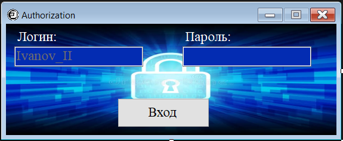
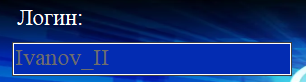
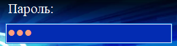
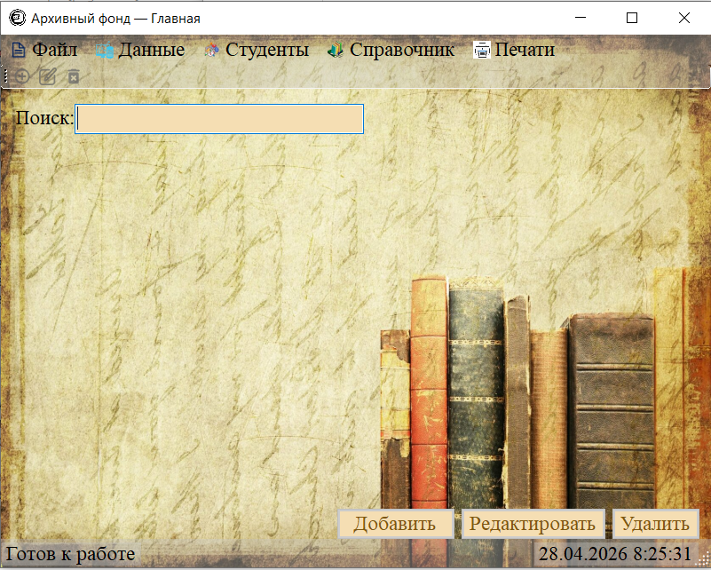

Справка по авторизации в системе архивного фонда
Эта страница содержит пошаговую инструкцию по работе с формой авторизации и ссылки на скриншоты интерфейса.
Шаг 1: Открытие формы авторизации
При запуске программы вы увидите окно авторизации. Оно имеет фиксированный размер (554x187 px) и оформлено в сине-голубой цветовой гамме.

Рисунок 1. Окно авторизации системы архивного фонда
Шаг 2: Ввод логина
- Найдите поле «Логин» в левой части окна.
- Кликните на поле ввода — оно подсветится.
- Введите ваш учётный логин. В поле есть подсказка с примером: Ivanov_II.
- Поле имеет синий фон и оранжевый текст для лучшей видимости.

Рисунок 2. Поле ввода логина с подсказкой
Шаг 3: Ввод пароля
- Перейдите к полю «Пароль» в правой части окна.
- Введите ваш пароль. Символы будут скрыты звёздочками для безопасности.
- Как и поле логина, это поле имеет синий фон и оранжевый текст.

Рисунок 3. Поле ввода пароля (символы скрыты)
Шаг 4: Выполнение входа
- После заполнения обоих полей нажмите кнопку «Вход», расположенную по центру внизу окна.
- Кнопка имеет градиентную заливку от светло-голубого к тёмно-синему.
- При наведении курсора кнопка слегка меняет прозрачность.
Рисунок 4. Кнопка «Вход» с градиентным оформлением
Возможные сообщения системы
- «Не введён логин!» — если поле логина пустое. Фокус автоматически вернётся к этому полю.
- «Не введён пароль!» — если поле пароля пустое. Фокус вернётся к полю пароля.
- «Данный логин не найден!» — если указанный логин отсутствует в базе данных.
- «Неверный логин или пароль!» — если данные не совпадают с записями в базе.
Успешная авторизация
Если данные введены верно:
- Окно авторизации закроется.
- Откроется главное окно системы архивного фонда.
- В заголовке окна будет отображено ваше имя и роль в системе.

Рисунок 5. Главное окно системы архивного фонда